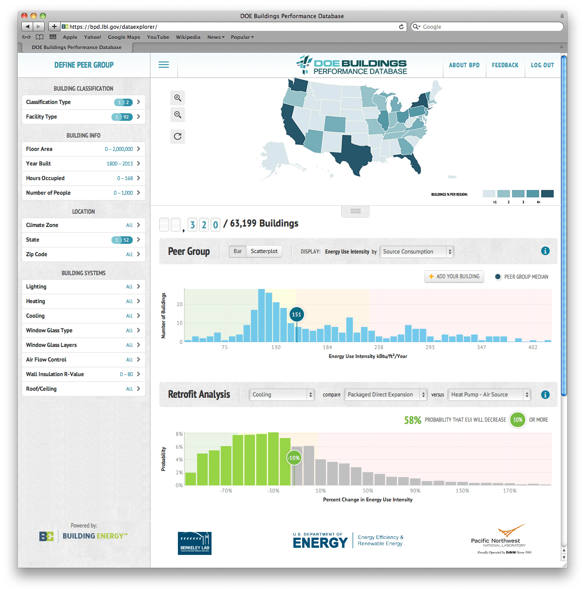
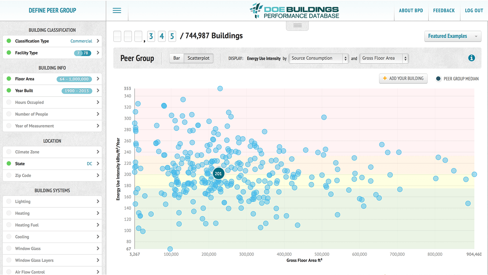

U.S. Department of Energy - Buildings Performance Database
Product strategy, creative direction, UX / UI design, data visualization, app development
The Buildings Performance Database (BPD) enables users to statistically analyze trends in the energy performance and physical & operational characteristics of real commercial and residential buildings.
BPD users use the intuitive visual user-interface to explore, compare, build cohorts, and draw analysis from the largest U.S. database of building energy data.
U.S. Department of Energy's Building Performance Data Explorer
Interactive Scatterplot: Energy Source Consumption Gross Floor Area
